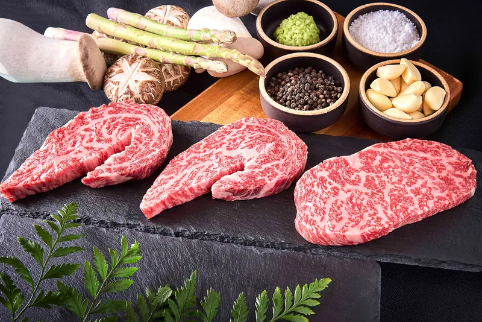
우참판 1++ No.9
안심과 등심 150g. 우참판의 이름을 건 대표 구이.
서래마을의 1++ No.9 한우.
자염으로 간하고, 숙련된 직원이 테이블에서 알맞게 구워 드립니다.
미쉐린 가이드 서울 2017 · 2018 · 2019
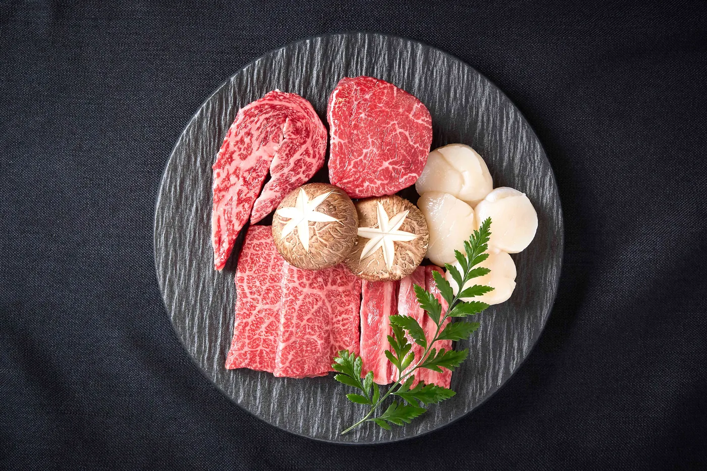
우참판 牛參判
우참판의 낙관에는 牛參判이 새겨져 있습니다. 소(牛)와 조선 육조의 벼슬 참판(參判). 그 이름처럼 한우 한 점에도 품계를 매깁니다.
대표 메뉴 우참판과 특안심은 1++ 중에서도 가장 높은 근내지방도 No.9 한우로 준비하고, 갯벌의 바닷물을 끓여 얻는 자염(煮鹽)으로 간을 합니다. 고기는 숙련된 직원이 테이블에서 알맞게 구워 드립니다.
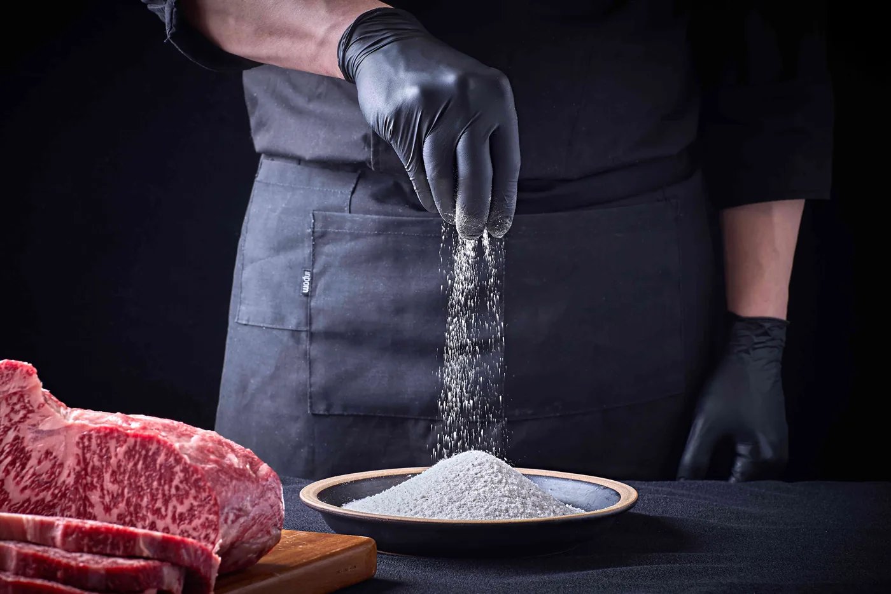
근내지방도 9, 1++ 등급 중에서도 가장 높은 단계의 한우를 씁니다.
갯벌의 바닷물을 오래 끓여 얻는 전통 소금으로 간을 합니다.
숙련된 직원이 가장 맛있는 순간에 맞춰 구워 드립니다.
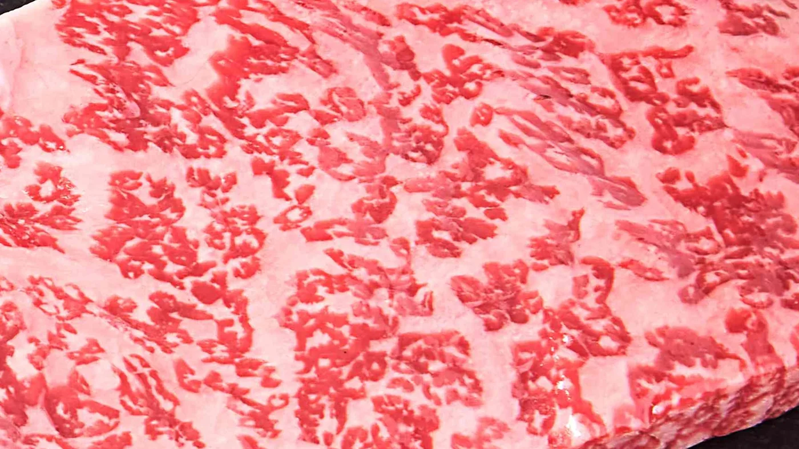
Marbling No.9
1++ 중에서도
가장 높은 단계
소고기 등급판정 기준에서 근내지방도 7–9는 1++ 등급, 그중 9가 최고 단계입니다.
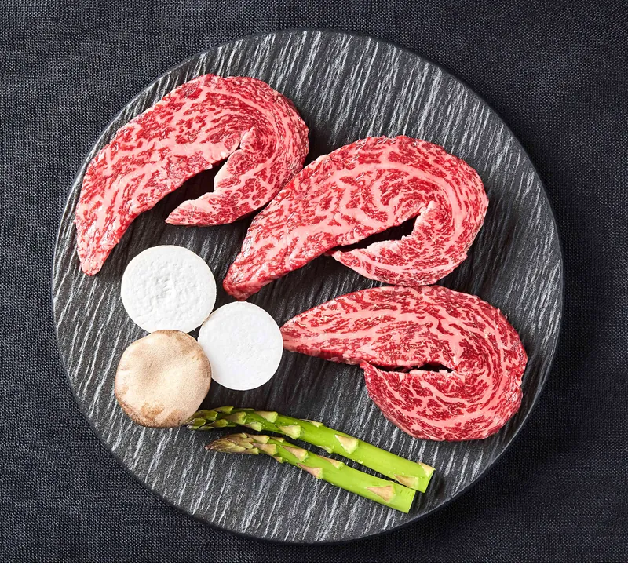
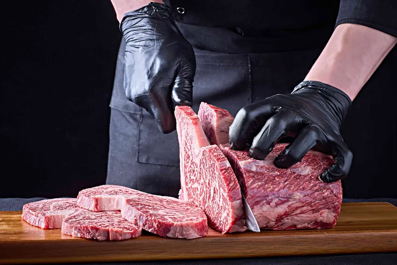
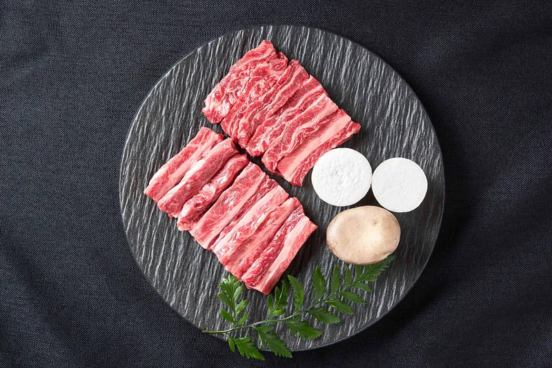
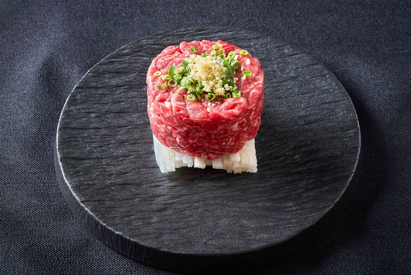
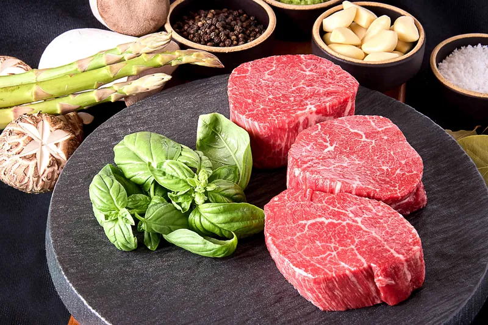
Private Rooms
4인부터 16인까지, 룸 차지 없이 이용하실 수 있습니다. 서래마을을 내려다보는 창가의 방과 조용한 방이 있습니다.
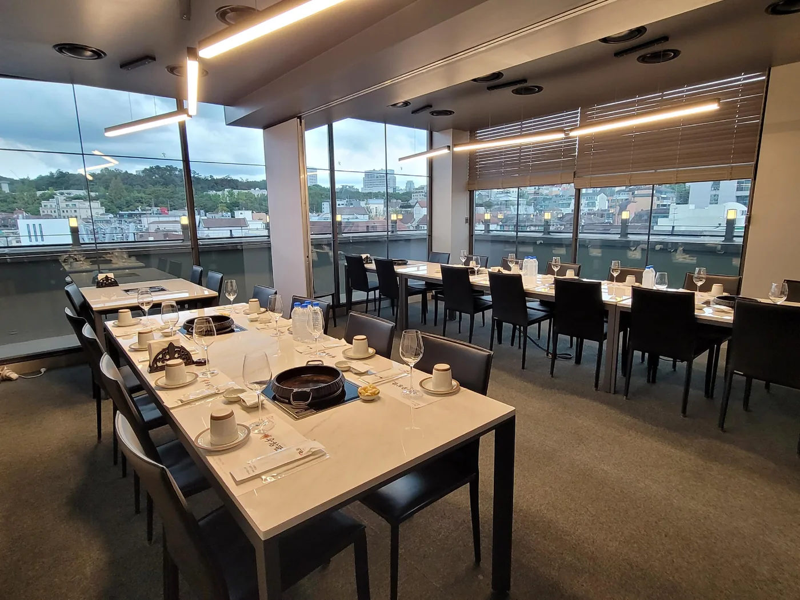
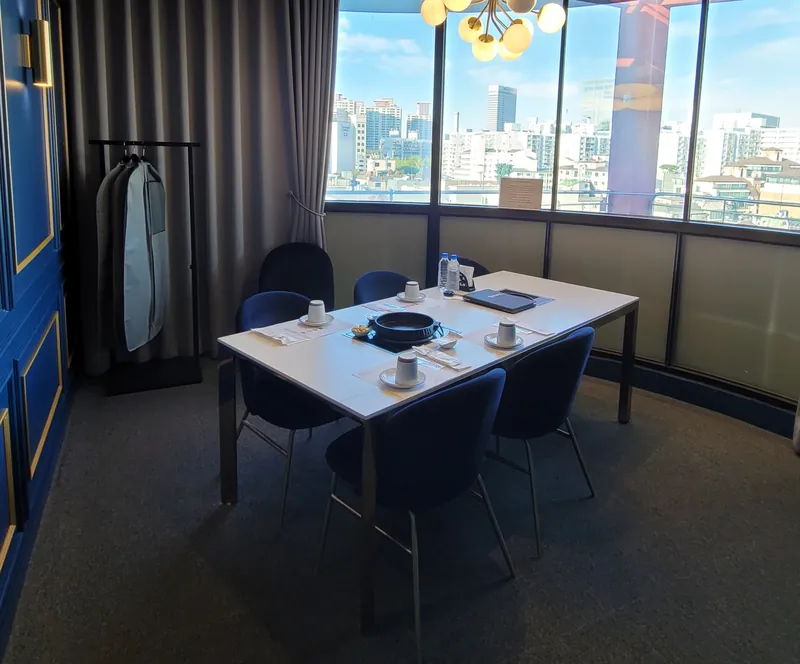
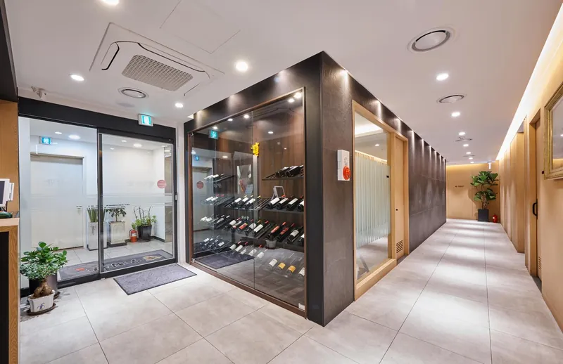
룸은 변경될 수 있습니다. 룸에서는 ‘우참판’ 메뉴 주문이 어렵습니다(주말·공휴일 제외).
Visit
| 평일 | 11:30 – 22:00 | 브레이크 14:30–17:00 라스트오더 21:00 |
|---|---|---|
| 주말 | 11:30 – 21:30 | 브레이크 15:00–17:00 라스트오더 20:30 |